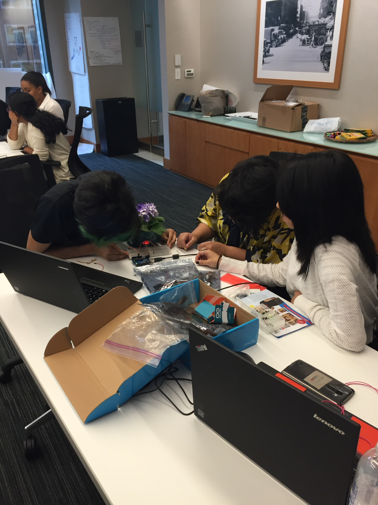
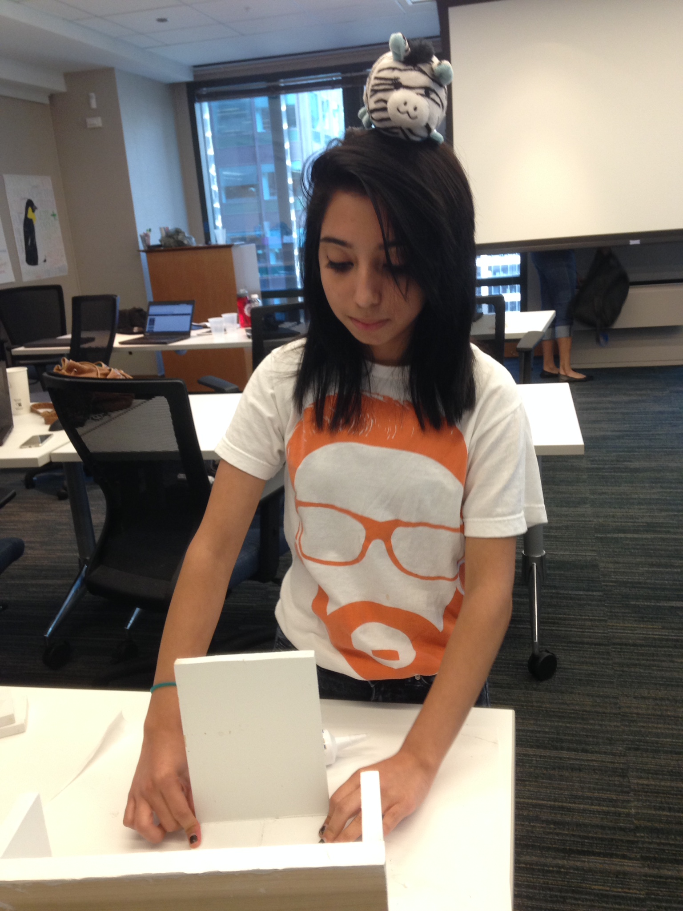
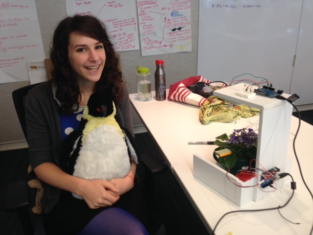

To decrease plant care complexity and make it more efficient to promote more growth with less resources.
A current global issue is the existence of food deserts, which are areas that lack access to fresh fruits and vegetables. In Chicago, 609,000 residents are affected by food deserts, according to the Chicago Tribune. This has led to the rise of urban farming through community gardens, aquaponics, and hydroponics. However, Aqua and hydroponics still use quite a bit of energy with grow lights, and many do not use the sun to its fullest potential. In certain aquaponics labs, the grow lights are kept constantly on, even when the sun is out, which wastes energy. The issue with community gardens is that they are difficult to maintain without designated people to care for them. Even with home gardening, for many people its difficult to remember to care for their plants leading to unhealty plants.
The Grow With The Flow will ease the struggles one has with plant care. It will notify you when to water your plants with the led turning a color to signify whether they are dry, over watered, or just right. In addition, when the sun goes down, LEDs will turn on to promote growth. LEDs are also more efficient with energy compared to other grow lights saving energy and cost. Having the LEDs closer to the plant also make the most of the energy used by increasing the potency of light. By extending the photoperiod of the plant, it's yield is maximized without wasting resources. The product can help save plants as well as be implemented in urban farming to ensure successful crops.
Since none of us has any experience in hardware and circuitry, we all spent a day learning about circuitry and arduino through tutorials. We then tried making LEDs light up ,however, our breadboard was not working.
The next day we brought new materials to use. This time most of our LEDs were not working because they were burnt out, so we had to test them all along with the other materials to make sure they all worked. It was trial and error.
We needed another arduino so one of our members brought one. We did not realize until the end of the day that it wasn't an arduino! It was a scaaaam!
In all our hardware related trials and tribulations Julio-Henry, Penguin, and Piglet were always with us to help work out our problems.
Elias struggle in making the display. The sawdust in her eyes(no goggles; SHAME). Burning the midnight oil. The top sagging from the weight.
Emily, Elias brothers dad and mom, Delana, and Girls Who Code
